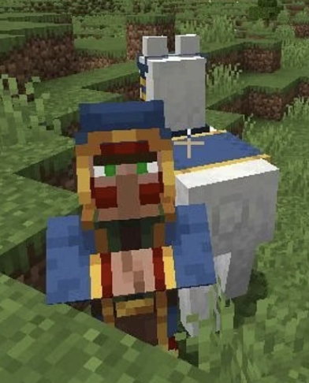
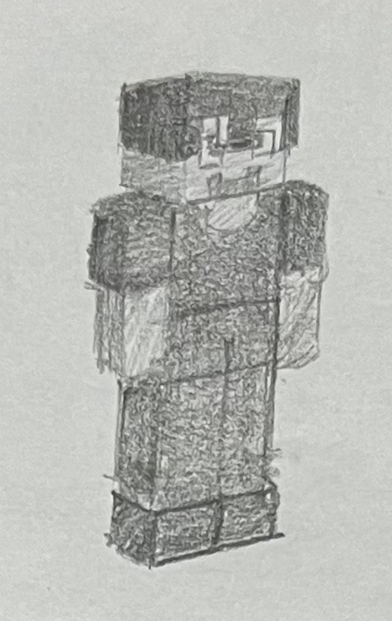
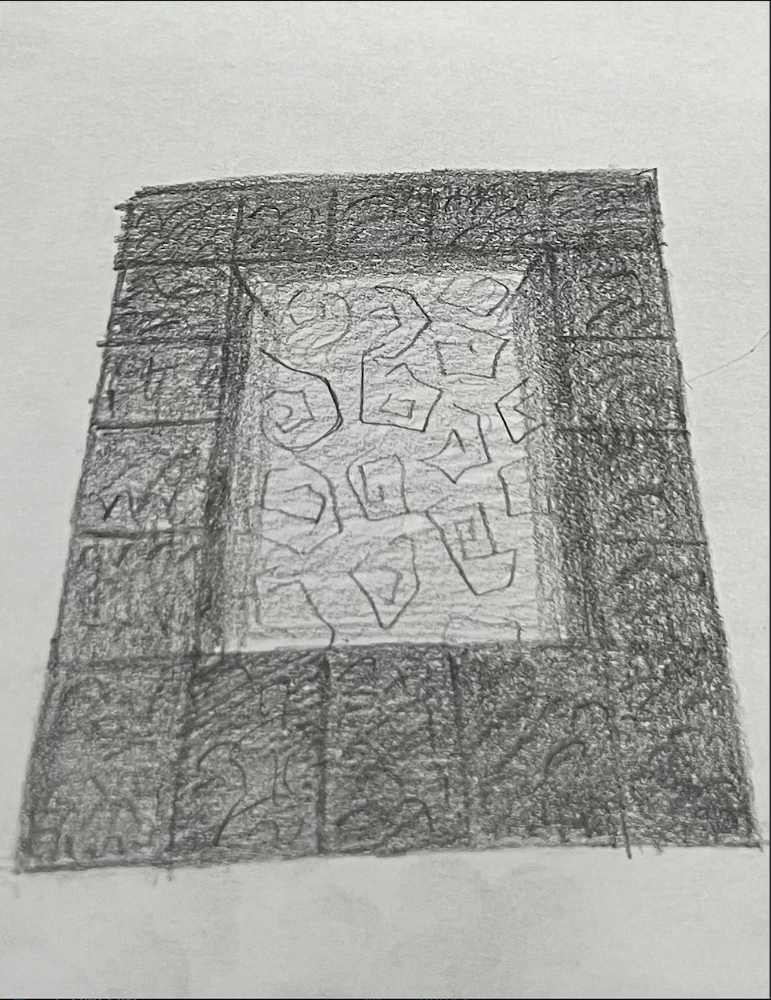
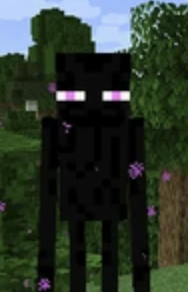
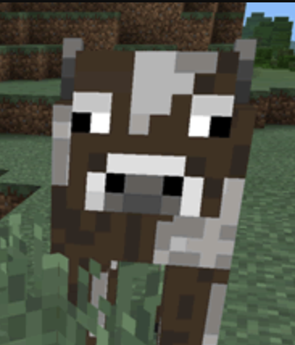
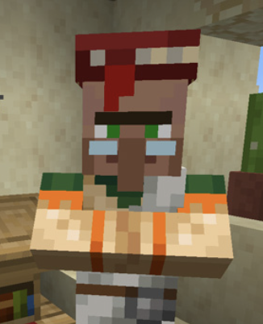

About Us
What is MineCraft CrossRoads?
We first heard the term "crossroad" in reference to one of the voyages of the Wandering Trader (right). Nice fellow! We don't seem him often, but the word came up enough to leave us other villagers curious. The closest crossroad we have is the pathways connecting our homes, after all.
Our wandering friend drescribed a crossroad as a place of meeting. That, however, implies meeting with someone. Was it us villagers, villagers at another location, or perhaps something else entirely? We must say first that our friend is rather talkative, so the silence that pursued each time these questions came was odd, to say the least.
After asking him later on in the privacy of our library, we found our answer: "Steve."
What We Know About Steve
Based on the Wandering Trader's tales, "Steve" appears to be one of his clients. From what we've gathered of them, they tend to be all over the place, meeting the trader across his voyagers, but also sometimes at a dwelling of their own similar to ours.
Beyond their local, "Steve" continuously amazes us in their odd features. We've made a drawing of them based on the Trader's remarks (left). They seem of similar stature to us but with some stark differences. For example, their arms can move and hold items! It is perhaps not as exciting to others, but to us, it's remarkable. The only creatures we know capable of this are the "endermen". Another point of interest is their attire. Steve seems to be able to "upgrade" their attire. Its not secret to us, of course. Our wonderful smiths are capable of making great armor that has been traded all over. Yet, there is something else to this being.
If anything, Steve is so odd to us because they feel "away", in a sense. There is some sensation to them That feels old yet afar. Our endermen friends have picked up on that easily, and they have not taken their presence well, as so we've heard. The best indicator of this was the portal (right), as we've drawn. No one has made those prior--at least not us. Our endermen friends reside in all three realms, and Steve has found a way into all of them. A strange fellow, indeed. We have yet the pleasure of meeting.
The Trader has mentioned on occasion what Steve has told him, and the terminology struck a humorous note at first. For instance, he called our world a "server," a place in a largest dimension called the game, "Minecraft" where other "players" such as himself can play. Are our worlds truly just their playgrounds? We have ignored this point in sight of a much more interesting point: the world outside this game rhetoric. Steve has spoken of buildings and technologies foreign to us but also mappable to some extent to our appliances, and truly interesting they are! A general term we've learned for it is "architecture," among many other new phrases.
What Then is Our Crossroad?
Across our many discussions with the Trader, we realized the extent to which we have learned about the places beyond us. We have never seen them, yet we know of it grass and its lights and its skies. We have a crossroad of our own now, fueled in part my Steve's conversations with the Trader. Steve, in that sense, is our crossroad!
Thus, we are MineCraft Crossroads: a place made to expand on the comparisons of our world and Steve's through the lens of architecture (and other handfuls of components.) Join us as we deepen the crossroad that has brought us all together so dearly!
Who Runs MineCraft Crossroads?
MineCraft Crossroads is run by a team of three members of our world (the "server" as Steve calls it.) Our members met at our founder's village through inivitations from them, joining the team part-time and contributing to its development through their unique experiences with architecture in the different parts of the world while also keeping a lookout for Steve.
Project History
In summary of our discussion of Steve and our team, MineCraft CrossRoads began after our founder, Jeffrey,
discovered the existence of Steve through talks with the Wandering Trader. Originally, he kept his ideas confined
to his library until he met Me, an enderman similarly interested in developing builds in their world-even if through
taking blocks (Jeffrey can attest to this). The output of the team was originally slow as the main goal was to keep tabs
on Steve and learn about the world they spoke of. After an incident in the village, many of the livestock escaped.
It was then Jeffrey invited one cow, Shawn, to join them. With Shawn's ever loud input, Jeffrey became
inspired to share his findings while still keeping tabs with Steve, asking Me to use their block-handling
talents to help them write their content and connect it to a platform originating in Steve's world.
This brings us to the current state of MineCraft CrossRoads, team and all. The team plans to expand their reviews
soon to include some of Me's build knowledge, rating the effectiveness of certain build techniques they learned by
watching Steve. The gallery will also be expanded to reflect this new direction, giving splotlight to a variety of
the team's passions and interests in the possibilties our world provides us.
Meet The Team
Member: Me
 Role: Lead Content Editor, Visual Content Lead
Hi There! I'm Me.
I have been on the server since its existence. Originally, I spent
most of my time in the End, but then I became friends with Jeffrey after he left me take
one of the books from his collection! Jeffrey invited me to join his MineCraft Crossroads group.
I don't really know what's going all all the time, but I am the member with moving arms, so I
handle our visual components and images. I am also our main editor when I am not in the End.
Member: Shawn
Role: Reviews Lead
Hi There! I'm Shawn. I haven't-MOOOO-been around too long, but I enjoy the grass on the server! Nice pick
by whoever made this-MOOOO-world. I met Me a while back after they took one of the fences in my enclosure,
MOOOO-letting me escape and explore the world! Jeffrey offered me wheat-MOOOO-to come back
to the village, but this time as a member of MineCraft Crossroads-MOOOO-team. I handle our reviews page
with the help of Me.
Member: Jeffrey
Role: Content Process Manager, Communications Lead
Hi There! I'm Jeffrey. I have been on the server since my village was here. I founded MineCraft Crossroads
aftering buying books with the wandering trader and learning about the rest of the world, especially
about "Steve" as his speakings of the "real world". Every since, I compare notes with the wandering trader,
learning more about Steve's world and our own, taking advantage of the many books I have in my library.
I handle our content-creation process.
Contact Us: Reach out to your local Wandering Trader and give him your message. He'll
deliver it to us.
Alternatively: Reach out to us via the "Linkedin," as we have learned of through Steve.